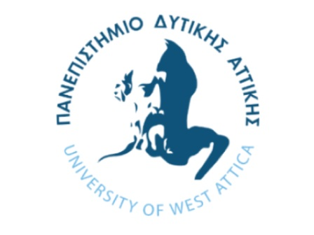

Σύντομο βιογραφικό της Αθηνάς Μπέλλου

Προσωπικά στοιχεία
Ονοματεπώνυμο: Αθηνά Παναγιώτα Μπέλλου
Ημερομηνία γέννησης:29 Ιουνίου 1999
Τηλέφωνο:2106888367, κινητό:69786626613
email:athinaa070@gmail.com
Διεύθυνση: Αγίας Ελένης 11,Αθήνα, Αττικής, 15772
Επαγγελματική εμπειρία
Εκπαίδευση
Γλώσσες
- Μητρική γλώσσα: Ελληνικά
- Πτυχίο Αγγλικών: Examination for the Certificate of Competency in English (ECCE)
- Πτυχίο Γαλλικών: Diplome d’etudes francais francaices 2E degreli>
Γνώσεις Η/Υ
Πιστοποιητικό πληροφορικής: European computer driving license (ECDL)
Γνώσεις σε:
- Χρήση H/Y και Διαχείριση Αρχείων (WINDOWS)
- Επεξεργασία Κειμένου (WORD)
- Υπολογιστικά Φύλλα (EXCEL)
- Βάσεις Δεδομένων (ACCESS)
- Παρουσιάσεις (POWER POINT)
- Υπηρεσίες Διαδικτύου (MICROSOFT INTERNET EXPLORER και OUTLOOK)